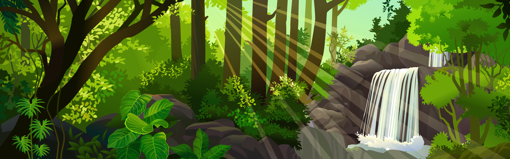

Elisa decide entrar na floresta e vê duas entradas:!
Elisa encontra dois caminhos na floresta.
Elisa anda com medo e encontra uma igreja antiga.
Elisa encontra um riacho

Elisa vê um monstro e com medo decide voltar pra casa.
Elisa adentra a igreja, e explorando ela encontra um animal morto se assusta e vai embora voltando para a floresta
Elisa decide continuar sua exploração e se depara com uma mulher.
E agora a vegetação está mais espessa e o som de pássaros é distante.
Ao tentar conversar com ela, Elisa vê que ela é um bruxa.